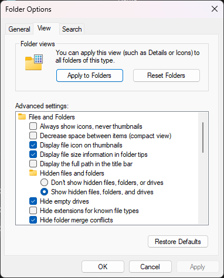

Running DSiWare
AKMenu-Next can run DSiWare in two ways, depending on your setup:
| Setup | Works? | How |
|---|---|---|
| Modded DSi, running AKMenu-Next from the console's SD card | Yes | nds-bootstrap, Unlaunch or Astronaut |
| Modded 3DS, running AKMenu-Next from the console's SD card | Yes | nds-bootstrap |
| DSpico in a DSi or 3DS | Yes | Pico-Loader |
| Any flashcart (including DSpico) in a DS or DS Lite | No | The DS and DS Lite don't have the hardware to run DSi software |
| Other flashcarts in a DSi or 3DS | No | Most flashcarts run in DS mode only. If your console is modded, put your DSiWare on the console's SD card instead |
DSiWare dumps need to end in .nds, .dsi, .srl or .ids for AKMenu-Next to pick them up. If yours has no extension at all, or is called something like 00000000.app, just rename it to something like Flipnote Studio.nds.
DSi and 3DS SD card
This is for the DSi and 3DS editions of AKMenu-Next, running from the SD card inside the console.
-
Make sure nds-bootstrap is installed in the
_ndsfolder on your SD card (the install guide covers this). -
Copy your DSiWare onto the SD card. You can put it in any folder you like, a
DSiWarefolder on the root keeps things tidy. -
Launch it from AKMenu-Next like any other game.
That's all there is to it on a 3DS.
Using Unlaunch or Astronaut to boot DSiWare (DSi only)
On a DSi with Unlaunch installed, you can have AKMenu-Next hand DSiWare over to Unlaunch instead of nds-bootstrap. This runs the title more like it would from the system menu, so it's worth a try if something doesn't work properly through nds-bootstrap.
Got Astronaut instead? That works exactly the same way, since Astronaut supports launching DSiWare just like Unlaunch does. Everything below applies to both. The option is still called Unlaunch in the settings, so just pick that.
- To use Unlaunch for all DSiWare, go to
Settings>Game loader settingsand setDSiWare bootertoUnlaunch. - To use it for one title, highlight it, press
Y, thenYagain for its settings, and changeDSiWare booterthere.
AKMenu-Next quietly falls back to nds-bootstrap if Unlaunch can't be used: if neither Unlaunch nor Astronaut is installed, if the title is 64MB or bigger, or if you're on a 3DS (which can't run either of them).
Saves
DSiWare doesn't use .sav files. Instead, each title can have a public save (.pub) and/or a private save (.prv). AKMenu-Next reads the sizes from the title itself and creates blank ones the first time you play, so you don't need to make them yourself.
Where they go:
- nds-bootstrap uses saves sitting right next to the ROM (e.g.
DSiWare/Flipnote.pub) if they're already there. If not, they go wherever your normal save settings say, so withUse 'saves' folderturned on that'sDSiWare/saves/Flipnote.pub. - Unlaunch / Astronaut always needs the saves right next to the ROM. If they're in a
savesfolder, AKMenu-Next moves them next to the ROM for you before booting.
If you already have saves from TWiLight Menu++ or a NAND dump, rename them to match the ROM's name and put them next to it, e.g. Flipnote.nds, Flipnote.pub, Flipnote.prv.
DSpico
Console compatibility
This only works with your DSpico plugged into a DSi or 3DS. It won't work on an original DS or DS Lite, as those don't have the DSi hardware needed for DSi-mode software.
To run DSiWare (and encrypted DS ROMs), Pico-Loader needs some files dumped from your console first. You only need to do this once.
-
Download the DSpico BIOS and NAND dumper utility.
-
Put
pico_file_dump.ndson the root of your DSpico's SD card. -
Make a
DSiWarefolder on the root of the SD card, and put any DSiWare you'd like to play inside. -
Put the SD card back in your DSpico and boot into it.
-
Find
pico_file_dump.ndsin the menu and launch it. It'll start dumping straight away. -
Once it says it's finished, press the power button to turn the console off.
-
Boot into AKMenu-Next and make sure
Game LoaderinSettings>Game loader settingsis set toPico-Loader. -
That's it! Head into your
DSiWarefolder and launch something.
Note
If your DSi/3DS is modded and has an SD card in it, you'll also see a DSi SD entry at the top level of AKMenu-Next. DSiWare launched from there goes through nds-bootstrap (installed on the console's SD card), not Pico-Loader. That's what the DSi and 3DS SD card section above is about.
Optional: tidying up your SD card
The dumper copies quite a few NAND folders onto your SD card. They need to stay there, but if you don't want to see them in the file list you can mark them as hidden. AKMenu-Next doesn't show hidden files unless you turn on Show hidden files in the settings.
Folders and files worth hiding:
_picofolderphotofoldershared1foldershared2foldersysfolder_picoboot.ndsboot.nds
Since the BIOS and NAND files have already been dumped, you can also delete pico_file_dump.nds now.
-
Open the SD card in File Explorer.
-
Hold
Ctrland click each of the files and folders you want to hide. -
Right click one of the selected items and choose
Properties. -
Under
Attributes, tickHidden, then pressOK. -
If it asks, choose "Apply changes to the selected items, subfolders, and files", then press
OK. -
They'll disappear from File Explorer, that's normal. You can see them again by turning on "Show hidden files" in File Explorer's "Folder Options".

-
Open Terminal and go to your SD card. Replace
SDCARDwith your card's name as it appears in Finder:cd /Volumes/SDCARD -
Hide the files and folders:
chflags hidden _pico photo shared1 shared2 sys _picoboot.nds boot.nds
To unhide something later, run the same command with nohidden instead of hidden.
You'll need the fatattr tool (it's in most distros' repos, e.g. sudo apt install fatattr). Then, from the root of your mounted SD card:
fatattr +h _pico photo shared1 shared2 sys _picoboot.nds boot.nds
Use -h instead of +h to unhide them again.
Put the SD card back in your DSpico and boot into the menu. The hidden stuff won't show up any more, but DSiWare will still work.
Tip
Files and folders starting with a . are hidden in AKMenu-Next too, so the ._ files macOS likes to leave everywhere won't clutter up your list.